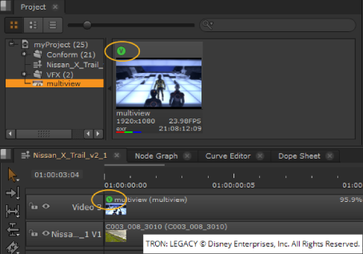

The title of this chapter is slightly misleading, as Nuke Studio isn’t actually limited to stereoscopic views, but rather provides multi-view support for as many views as you need. The views do not have to be stereo pairs, but since that is the most obvious application, this chapter mainly deals with stereoscopic projects.
In many ways, Nuke Studio lets you work on stereoscopic material just like you would on any other images. For example, the Timeline Editing Tools work the same for stereo views in the Viewer as they do for regular clips. However, there are also a few stereo-specific settings that you need to be aware of when viewing stereoscopic material. The following teaches you how to set up your stereo project, read in, and view your images.
In the current release, there are a few restrictions to stereo projects which will be addressed in future releases:
• Only multi-view .exr and .mov files are currently supported. Separate files per view, such as _left and _right .dpx files, are not supported in the Timeline environment.
• Create Comp
Here's a quick overview of the workflow:
| 1. | The first step in working with stereo footage in |
| 2. | You can then import your stereo footage into Nuke Studio just as you would regular clips. For more information, see Ingesting Media. |
Multi-view clips and clip instances are marked with a to distinguish them from regular items.

| 3. | In the Viewer, you can select which view to display with the views buttons. For more information, see Displaying Views in the Viewer. |
|
|